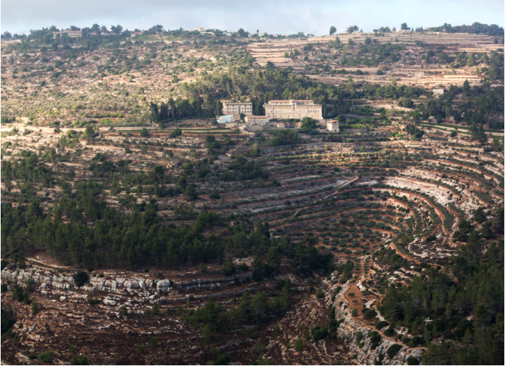
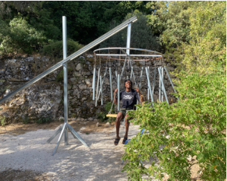
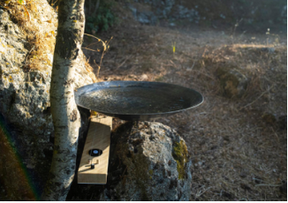
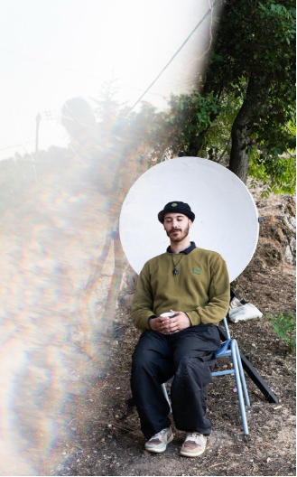
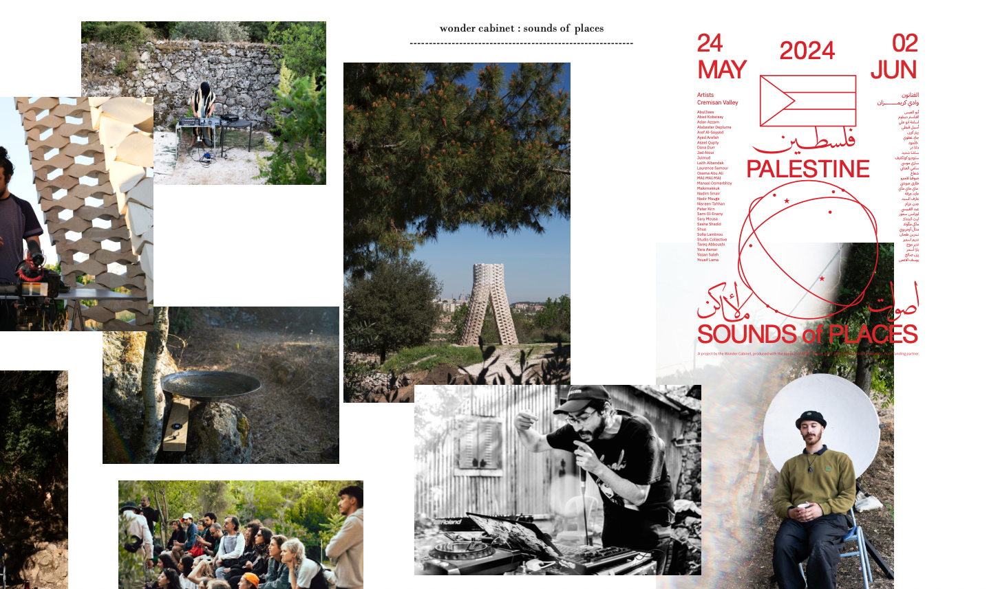

"Sounds of Places" is an annual residency-based sound gathering that focuses on the sonic aesthetics of place. The first edition will take place from May 24 to June 2, 2024 in the Cremisan valley, one of the last green spaces around the city of Bethlehem in Palestine. The residency involves sonic artists, artisans, designers, visual artists, and the nuns at the Cremisan monastery during the entire period. Three sound sculptures will be placed in the landscape. Whether activated by wind, rain, humidity, dew, sun, or by the active participation of visitors, or by blending composed sonic pieces with live sounds from the landscape, the three installations resonate with the valley and with each other. Together, they create a repository of sounds that potentially speaks to the spirits of other environments, landscapes, both close by and on the other side of the world.
"Sounds of Places" seeks to create sonic analogies beyond the spatial limit every sound emerges from. In that sense, it builds upon and expands existing strategies to reclaim our ever-renewed sense of belonging.
The Cremisan Valley has been a long-standing transversal theme in our practice. It runs through our architectural work as well as through the activities of Wonder Cabinet and several of its projects, including Sounds of Places.
Our attachment to Cremisan is both personal and cultural. The valley has shaped our imagination of what a green space is and forged our understanding of the relationship between the Palestinian city and its surrounding landscape. Historically, Palestinian cities developed as dense urban nuclei embedded within vast natural landscapes, particularly olive orchards. These cultivated landscapes were often left largely open, not as unused land but as a way of preserving the territory while maintaining a living relationship to it. The land was punctuated by small stone structures, manātir, that marked property and presence in a time when formal land registries did not exist.
Cremisan is one of the landscapes where this imaginary was formed: a place where the city and the land remain in dialogue, where nature is neither purely wild nor entirely domesticated, but culturally inhabited. It embodies a particular form of cultural claim over nature, one that is based on proximity.
Today, Cremisan is also the last remaining green space around Bethlehem. It is under direct threat of destruction, annexation, and exclusion through the route of the apartheid wall. In response, the local community, and particularly the religious community, initiated weekly gatherings in the valley in the form of open-air masses. While these gatherings protested the construction of the wall, they also expressed something deeper: a defense of a certain relationship to the landscape.




Three main permanent installation were produced during Sounds of places 2024 in the cremisan valley :
1. Yara Asmar, Wind chime
Yara Asmar introduced wind chimes into the Cremisan Valley through an installation centered on a nest swing surrounded by large steel chimes. Activated by wind, by visitors striking them, or by the movement of the swing itself, the piece transformed motion into sound. Though pre-tuned the chimes allowed visitors to generate new collective soundscapes. The work also enabled the artist to inhabit the valley in spirit, like a ghost, in landscapes that her body is barred from visiting, for the time being.
2. Jad Atoui, Newton Gaza
Jad Atoui's installation Newton Gaza transformed wind into a sonic instrument. Inspired by Hussam El Attar, a young boy in Gaza who built wind turbines to generate electricity during the blockade, the work consisted of a string instrument activated by small wind turbines and motors. As the wind moved through the valley, it set the mechanism in motion, causing the strings to vibrate and animate the water contained in a metal pan, producing subtle acoustic resonances.
3. Tareq Abboushi, Stone sound mirror
Tareq Abboushi's installation unfolded across the Cremisan Valley through a series of parabolic sound mirrors made of stone. Their focal points were geometrically aligned with directional speakers broadcasting Abboushi's compositions, weaving together field recordings from the valley with other sonic materials. By concentrating the emitted sound while reflecting fragments of the surrounding soundscape, the mirrors created a layered listening experience where composed music and the living acoustics of the valley intertwined.
